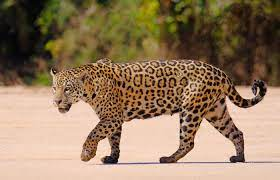

Caracteristicas das onças
ANIMAL
CARACTERISTICA
ALIMENTAÇÃO
imagem
onça
É um animal de grande porte e, por isso, é considerado o maior felino das Américas e o maior carnívoro da América do Sul.
carne
